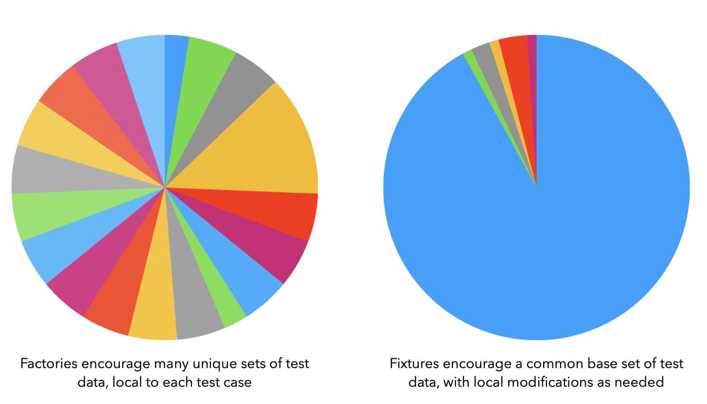

Factory Frustrations: Optimized for Isolation
When Rails developers write tests, part of that process is to arrange test data in a certain shape, in order to make assertions about the database state and domain. For example: does this active account have access to this feature they’re supposed to? Do we correctly ensure a cancelled account does not? And so on.
Rails’ default approach to supplying test data is database fixtures written in YAML. With fixtures, you manually write out data and relationships in N files for N associations. Fixtures prioritize speed of running tests, but many Rails developers, myself included, find the approach cumbersome and clunky to work with. The tradeoff often doesn’t feel worth the cost.
A popular alternative to fixtures is factories, primarily via the FactoryBot gem. With factories you don’t focus so much on relationships but just the object data for each record. Factories are easier to write than fixtures: there’s just less to think about to get started. It’s easier with factories to test your codebase, particularly during the greenfield phase.
However, as the app grows and the codebase has hundreds of models, controllers and test files, the benefits of factories can start to hinder you more than help. In my experience, test suites using factories become slow and confusing, with few affordances for developing shared language within teams.
In this series, I’ll go over issues I’ve seen with factory-heavy test suites and what I find difficult about the constraints they impose. It’s based on my decade of using factories at jobs and in client codebases.
Your Test Setup’s Topology

Factories have a local-first approach where each test case is isolated, and any test data scenario is set up from scratch each time. It’s super easy to write user = create(:user) when you need a user for your test, but now that test has to wait for everything about a user to be created from scratch.
On top of the speed issues, this strategy makes your test data setup scattershot and spread across many test files. Within each test file, much of the setup is overall similar but slightly different. This makes it really difficult to spot what’s important or what’s just incidental.
That adds cognitive load when you’re trying to update a test file. You have to learn the bespoke setup pretty much from scratch each time you revisit the file. Moreover, what you learn in one file doesn’t apply to another because it has its own slightly different setup.
Let’s contrast with the fixtures approach. With fixtures we’d have a base set of test data that’s seeded once ahead of time, while still allowing for local modifications as needed. It’s annoying to visit a separate `users.yml` file every time you need to make an adjustment to the base user, but you can write `user = users(:one)` in your test and have a user without spending any time in the test on creating that user.
While fixtures are more difficult at first, over time you recoup that investment because you’re working with named data sets. I have my own issues with fixtures, but we don’t have time to go into that today. I’ll explore more of the ways fixtures can help or hurt you in a later post.
What you can do
Rather than trap yourself with a separate factory that has to run for every test, or YAML files that might fail validations or require editing multiple files for every association, you can get the best of both worlds by building fixtures once in regular Ruby code.
This strategy has been gaining mindshare lately in the Ruby community, with multiple gems now implementing this pattern. My own gem Oaken was born directly from the pains of working with fixtures and factories after they have grown beyond what’s manageable.
Using Oaken, you get a factory-like interface for creating your records, but you get fixture-like speed when running your tests, since the records are seeded once ahead of time exactly like fixtures.
# db/seeds/accounts/spinel.rb
account = accounts.create :spinel, name: “Spinel Cooperative”
users.admin.create :spinel_kasper, name: “Kasper”, accounts: [account]
# test/models/user_test.rb
def test_user_name
assert_equal “Kasper”, users.spinel_kasper.name
end
All the speed of fixtures, all the ease of factories. Easy.
I have a lot more thoughts about both factories and fixtures, based on my work with some of the most famous Rails apps. There wasn’t room to fit everything today, but I’ll be back soon with more.